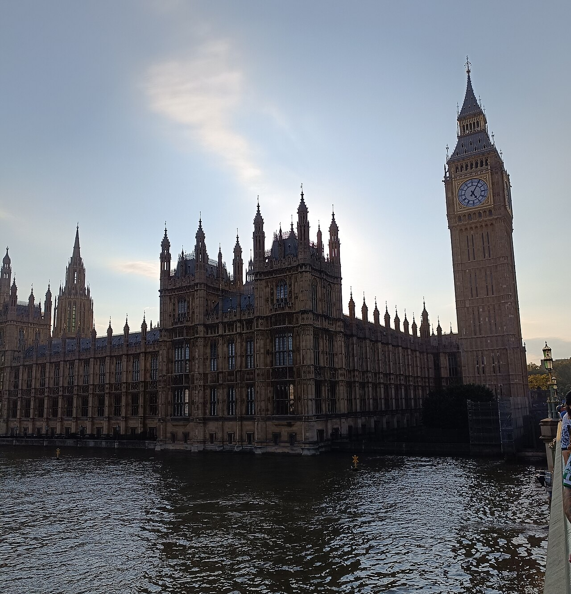
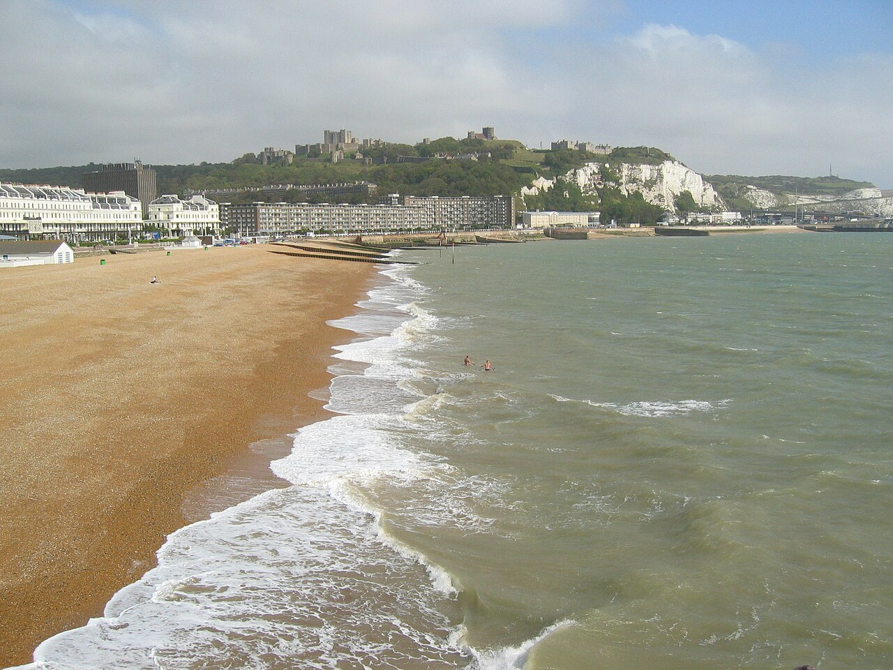
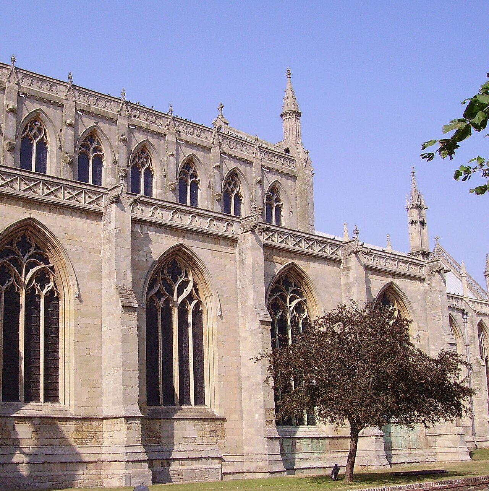
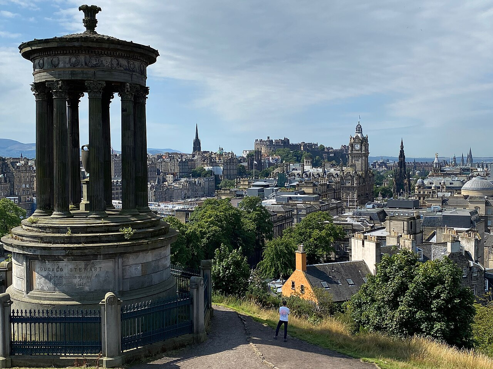
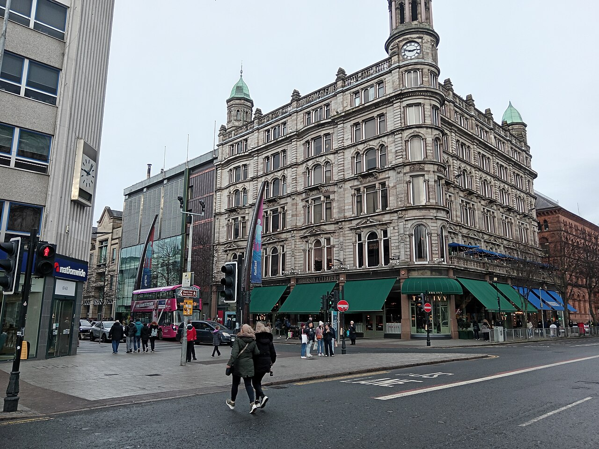
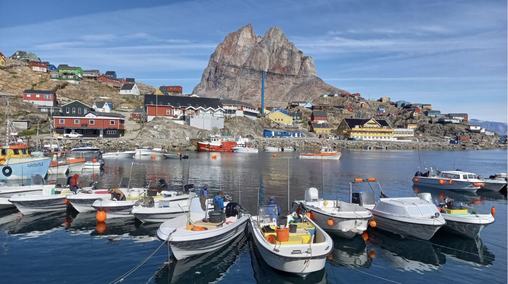

社会・経済 Society & Economyイギリスは、 なぜEUを 離れた？ 2016年6月、イギリスは国民投票でEUを離れると決めました。ユーロも使わず、特別席にいた国が、なぜ輪そのものから出たのか。「片足だけの仲間」だった歴史、真っ二つに割れた地図、海の上に引かれた線で、たどってみませんか。
2026.11.26 UP 約5分で読める 文：SOMOSOMO編集部
写真：ロンドンの国会議事堂／Hotolmo22（2024年、CC0）
イングランド北部の町マンチェスター、2016年6月24日の朝7時20分。市庁舎で、全国の結果をまとめる責任者が、国民投票の最終結果を読み上げました。EU（ヨーロッパ連合）を「離れる」が51.9%、「残る」が48.1%。夜通しの開票の末、差は約127万票でした。
EUは、ヨーロッパの国々が、品物や人の行き来のルールを共通にしている集まりです。イギリスはユーロを使わず、ギリシャの危機のときも自分のお金ポンドのままでした。EUの中で、いわば特別席に座っていた国です。その国が、なぜ席そのものを立ったのでしょう。
マンチェスターの市庁舎 見どころは、空に向かってのびる時計塔。2016年6月24日の朝、この建物で国民投票の結果が発表されました。写真は2017年のものです。写真：Manchester Town Hall Exterior ／Michael D Beckwith（2017年、CC0）
In a word
国のことは自分で決めたい という声が、経済への心配 をわずかに上回ったから。
01
Half In
はじめから、 片足だけの 仲間だった
EUのもとは、1950年代にフランスや西ドイツなど6か国が始めた集まりです。イギリスは1963年と1967年に加わろうとしましたが、2度ともフランスのド・ゴール大統領に断られました。
ド・ゴールが退いたあと、1973年1月1日に、ようやくその集まり（当時の名前はEC＝ヨーロッパ共同体）に加わります。2年後の1975年には早くも「残るか、離れるか」の国民投票を開き、67%が残ることを選びました。
けれどイギリスは、いつも一歩引いていました。1本目で見た1992年のマーストリヒト条約で、共通のお金に入らなくてよい権利を取り、自分のお金ポンドを守ります。国境でパスポートを見せずに行き来できる取り決め（シェンゲン協定）にも入りませんでした（Fig.01）。
Fig.01 イギリスは、 どこまで 仲間だった？
フランス・ドイツ
イギリス
EUに加わる
お金はユーロ
国境の検査なし
EUの人が住んで
働ける
（シェンゲン協定）
1973年から
ポンドのまま
パスポートを見る
見どころは、灰色の列の赤いバツ。イギリスはEUの仲間でも、お金と国境の検査は自分のやり方を守りました。ただ、EUの人がイギリスで暮らし、働ける約束には入っていました。

ドーバーの浜と白い崖 イングランドの南東の端、大陸へのフェリーが出る港町です。見どころは右奥の白い崖と、丘の上のドーバー城。海の向こうの大陸とは、いつも少し距離のある島国でした。写真：Dover-Beach-20040907-001 ／Gary Houston（2004年、CC0）
02
Two Sides
「自分で決めたい」と 「暮らしを守りたい」
2013年1月、キャメロン首相は、2015年の総選挙で勝てば国民投票を開くと約束しました。EUに批判的な政党が支持をのばし、自分の保守党の中からも声が上がっていたためです。選挙に勝ち、2016年6月23日に投票が行われました。投票率は72.2%と、イギリス全体の国民投票で過去最高でした。
EUは、大きなマンションの管理組合に少し似ています。住人は中庭やエレベーターを自由に使えるかわりに、みんなで決めたルールに従い、組合費を払います。ユーロや国境の検査のように、特別あつかいを認めてもらえたこともありました。けれど、ほとんどのルールはみんなと同じです。
離れたい側は、2016年の投票前の運動で「Take back control（主導権を取り戻そう）」を合言葉に、法律や国境を自分たちで決めようと訴えました。EUの人が自由に移り住めるため移民の数を自分で決められないこと、世界の国々と自由に貿易の約束を結べないことを問題にしたのです。
残りたい側は、同じ運動の中で、経済への影響を心配しました。関税（輸入品にかかる税）や手続きなしに品物を売れるEUの市場を離れれば、仕事や投資が減り、世界での発言力も弱まる、という主張です。
結果は、地域によって大きく分かれました（Fig.02）。年代の差も大きく、投票の直後の調査会社ユーガブの推計では、離れるを選んだのは18〜24歳で約3割、65歳以上で6割あまりでした。
Fig.02 国民投票の結果 （2016年）
スコットランド
残留 62.0%
イングランド
離脱 53.4%
北アイルランド
残留 55.8%
ウェールズ
離脱 52.5%
アイルランド
（EUの国）
残留 59.9%
ロンドン
離脱が多かった
残留が多かった
見どころは、スコットランドと北アイルランドの斜線と、イングランド・ウェールズの赤。斜線は残留、赤は離脱が多かった地域です。ただ首都ロンドンは、イングランドの中でも残留が多数です。数字は選挙管理委員会の発表。


ボストンの教会と、エディンバラの街 左は、イングランド東部の港町ボストンの教会。この町では75.6%が離脱を選び、全国の開票区でいちばん高い割合でした。右はスコットランドの首都エディンバラ。この街では74%が残留を選びました。写真：左 Boston Stump 03 ／Immanuel Giel（2006年、パブリックドメイン）、右 Edinburgh-scotland-uk-panoramic-sky-clouds-1640092 ／Mauro Campedelli（2021年、CC0）
03
After the Exit
離れたあとも、 線引きは 続いている
2017年3月29日、イギリスはEUに、離れることを正式に伝えます。国会での否決や首相の交代をはさみ、離脱したのは2020年1月31日。暮らしが急に変わらないよう、その年の末までは、品物や人の行き来など、EUのルールのほとんどをそのままにしました。
いちばんの難問は、北アイルランドでした。アイルランド島は、南のアイルランド（EUの国）と、北の北アイルランド（イギリス）に分かれています。約30年続いた北アイルランドの対立を終わらせた1998年の和平合意のあと、そのあいだの国境は、検問なしに行き来できるようになっていました。
国境に検問所を戻せば、和平がゆらぎかねません。そこで品物の確認は、陸の国境ではなく、グレートブリテン島と北アイルランドのあいだの海で行うことになりました（Fig.03）。
Fig.03 国境の線は、 海の上に 引かれた
グレートブリテン島
イングランド・スコットランド・ウェールズ
アイリッシュ海
ここで
品物を確認
北アイルランド
イギリスの一部
陸の国境
検査なしで
そのまま通れる
アイルランド
EUの国
北アイルランドの取り決め（2021年から）
見どころは、赤い点線が陸ではなく海の上にあること。同じイギリスの中に、品物を確かめる線が引かれました。
同じ国の中に線が引かれたことに、イギリスとのつながりを大切にする北アイルランドの人々は強く反発しました。一方で、EUの市場ともそのまま取引できる点を、北アイルランドの強みと見る声もあります。2023年2月、手続きを軽くする見直しが決まります。

北アイルランドの中心、ベルファスト ベルファストの中心の大通り。北アイルランドの品物の行き来は、離脱のあとの大きな宿題になりました。写真：City of Belfast,Northern Ireland in 2025.01 ／CAPTAIN RAJU（2025年、CC0）
離れてよかったのか。評価はいまも分かれています。予算責任局（経済の見通しを出す政府の独立機関）は2021年、EUとの新しい貿易の約束のもとでは、長い目で見ると、EUに残っていた場合より生産性が約4%低くなると見込みました。
一方、離脱を支持する人々は、オーストラリアやニュージーランドと自分たちで貿易の約束を結べたことを、成果に挙げます。
世論はどうでしょう。2023年1月の世論調査では、離れたのはまちがいだったと答えた人が54%、正しかったと答えた人が35%でした。
自分で決めたい気持ちと、経済への心配。もともと片足だけの仲間だったイギリスでは、2016年、その天秤がわずかに「離れる」側へ傾いたのです。
04
By the Numbers
数字で見るイギリスの離脱
52対 48 100人なら、離れる52人・残る48人。差はたった4人分（全体の差は約127万票）選挙管理委員会
47年 イギリスがEC・EUの仲間だった年数（1973年1月〜2020年1月）英語版 Wikipedia
約 270本 北アイルランドとアイルランドの国境を越える道の数。いまも検問はない英語版 Wikipedia
Here's the Fun Part
ここが面白い！
EUを離れた国は、いまもイギリスだけです。ところが、その30年以上前に、EUの前身のECを抜けた場所がありました。北の大きな島、グリーンランド です。
当時はデンマークの1つの県だったグリーンランドは、1973年、デンマークといっしょにECに入りました。島では70.8%が反対していたのに、です。1979年に自治を手にすると、1982年の住民投票で53%が離脱を選び、1985年2月1日に抜けました。
理由は魚です。島の暮らしを支える漁場で、ドイツなどほかの国の船にも取り分が決められることに、不満が積もっていました。グリーンランドの広さは約217万km²。当時のECの10か国の本土を合わせたより広い島が、魚のために輪を出た のです。
スーパーで「カラスガレイ」の切り身を見かけたら、英語の名前を思い出してみてください。グリーンランド・ハリバット。ヨーロッパの輪を先に出た、あの島の名前がついた魚です。

グリーンランドの港の漁船 グリーンランド西部の町ウンマンナックで、カラスガレイのはえ縄漁の用意をする小舟。見どころは、入り江をうめる白いボートと、奥のとがった岩山。写真：Inuit Longline Fishing Boats ／Caroline Bouchard（2022年、CC0）